MOB: Design System
Cómo construí el sistema de diseño de N5 Now desde cero — sin que nadie lo hubiera pedido — y lo convertí en el estándar oficial de la compañía.
Cuando entré a N5 Now, el diseño era básicamente un caos descentralizado. Cada equipo hacía lo suyo. Un mismo componente podía verse y comportarse diferente dependiendo del módulo que abrías. No había criterio compartido, no había sistema, no había nadie que lo estuviera reclamando.
Yo había entrado para hacer diseño web, gráfico y audiovisual. Pero cuando me propusieron pasarme al área de UX — que en ese momento no existía — me pareció exactamente el tipo de problema que me interesaba atacar.
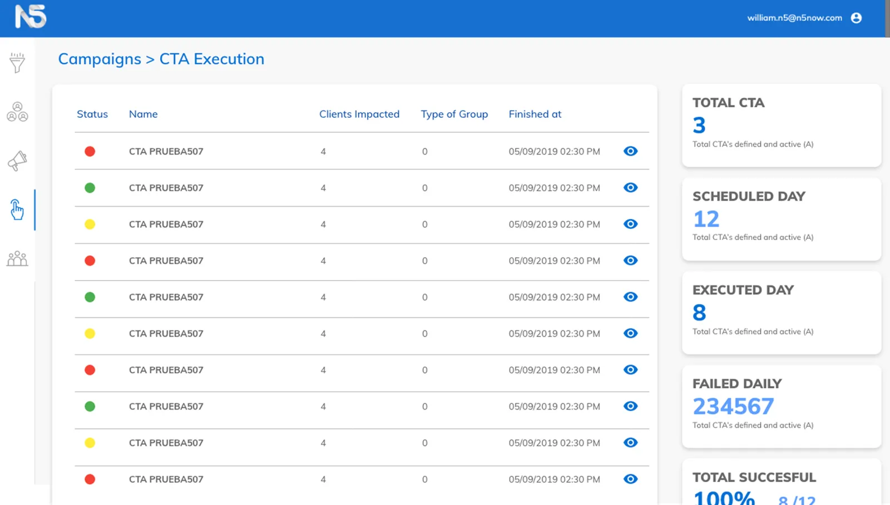
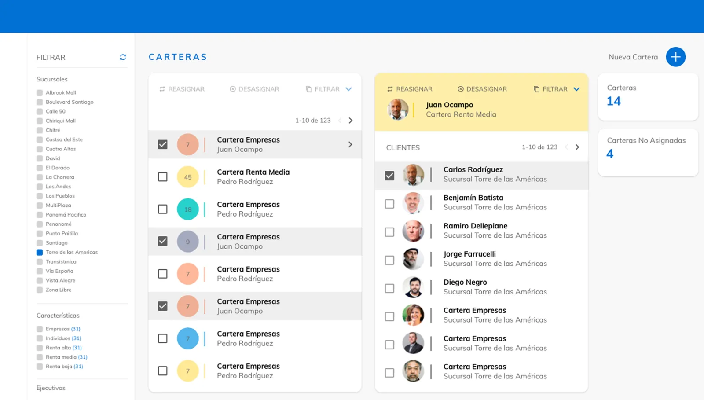
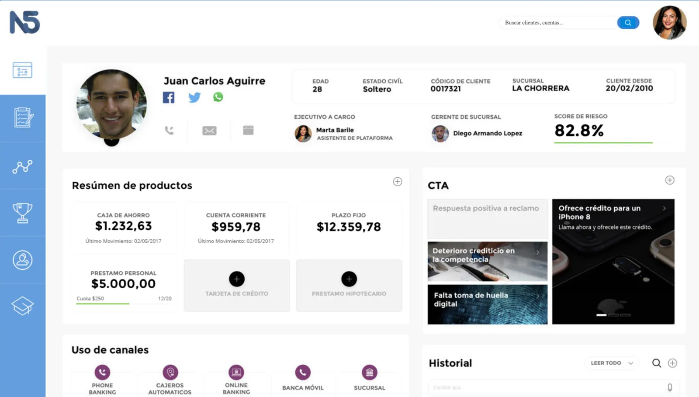
Campañas, Carteras y FMC antes del sistema. Tres módulos, tres criterios distintos.
No arranqué con una gran propuesta ni una presentación para convencer a nadie. Arranqué a ordenar lo que había. Con un desarrollador frontend empezamos a construir el sistema en paralelo, casi en secreto. Le pusimos MOB — Methodology to Organise and Build — pero entre nosotros lo llamábamos "la mafia", porque eso era: algo que crecía desde las sombras sin que nadie lo hubiera pedido oficialmente.
La base fue Material Design, adaptado sobre MUI. Primero lo desarrollamos en Adobe XD, después lo migramos a Figma en el momento justo. Esa migración fue clave para que el sistema pudiera crecer y ser adoptado por el equipo de diseño.
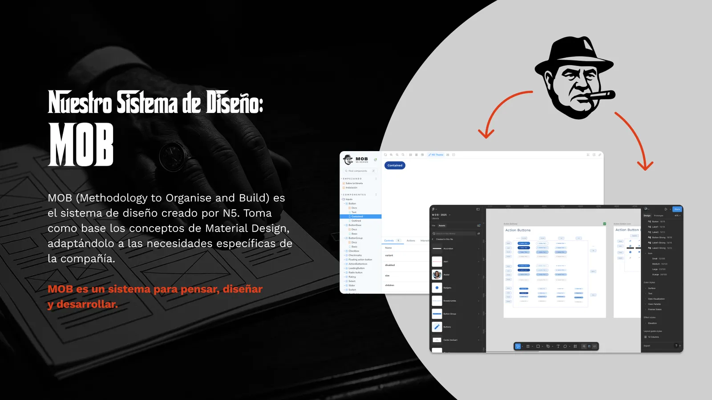
"Nuestro Sistema de Diseño: MOB" — slide de la presentación de filosofía al equipo.
Lo más difícil fue la evangelización. Los líderes no creían que esto era necesario — increíble pero real. Estuve meses convenciendo equipos, mostrando valor con cada módulo nuevo, mientras la estructura de la compañía cambiaba constantemente. No fue lineal para nada.
Pero de a poco fue tomando forma. Primero los componentes, después los patrones y los comportamientos, después la documentación dentro de Figma. Hasta que este año cerré el ciclo con una presentación de filosofía: Los 8 Mandamientos del Diseño de Producto en N5. Ya no era solo un sistema de componentes — era una forma de pensar el diseño que podía ser compartida con producto, tecnología y negocio.
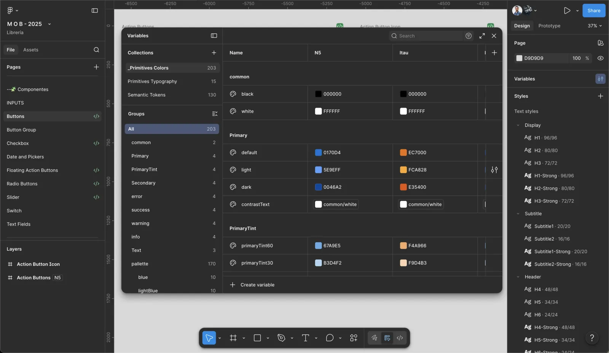
Variables de color en Figma: la misma pantalla con tokens de N5 y de Itaú Chile. La flexibilidad del sistema, visible.
MOB es un sistema de diseño completo para una plataforma financiera enterprise. Componentes, patrones, principios de interacción, documentación. Pero lo que más me importa no es el inventario — es la lógica detrás.
La premisa central: los clientes pueden personalizar la identidad visual, pero sin tocar el esqueleto que sostiene el producto. La marca del cliente se ve. La esencia de N5 se siente.
Los 8 mandamientos definen desde cómo usar el sistema hasta cómo tomar decisiones de diseño. No son solo reglas — son una cultura de trabajo que se extiende más allá del equipo de diseño.
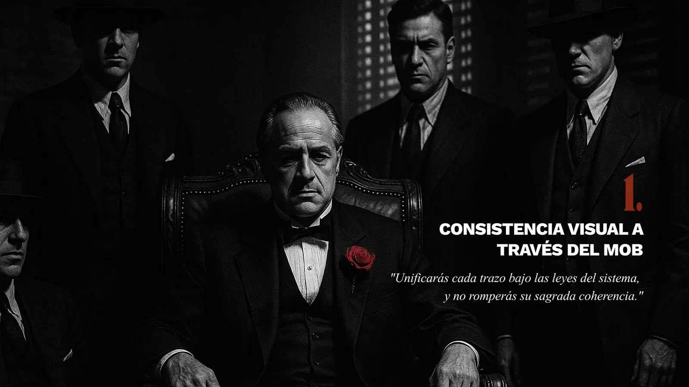
Mandamiento 1. MOB son las siglas de Methodology to Organise and Build. También son otra cosa.
MOB pasó de ser una iniciativa que nadie había pedido a convertirse en el estándar oficial de diseño de N5 Now. El antes: 4 equipos con librerías y criterios propios, un producto distinto por cliente. El después: un único sistema adoptado por los 3 equipos de producto, con la identidad del cliente aplicada encima vía tokens — sin tocar el producto.
El impacto más concreto: el CRM mobile se diseñó en 3 días y se implementó en 2 semanas. La QA visual se redujo radicalmente — los componentes se reutilizan íntegramente y a veces alcanza con "agregá un botón primary acá". La customización por cliente pasó de trabajo manual componente a componente a minutos: los tokens se aplican en una variable, no en el código.
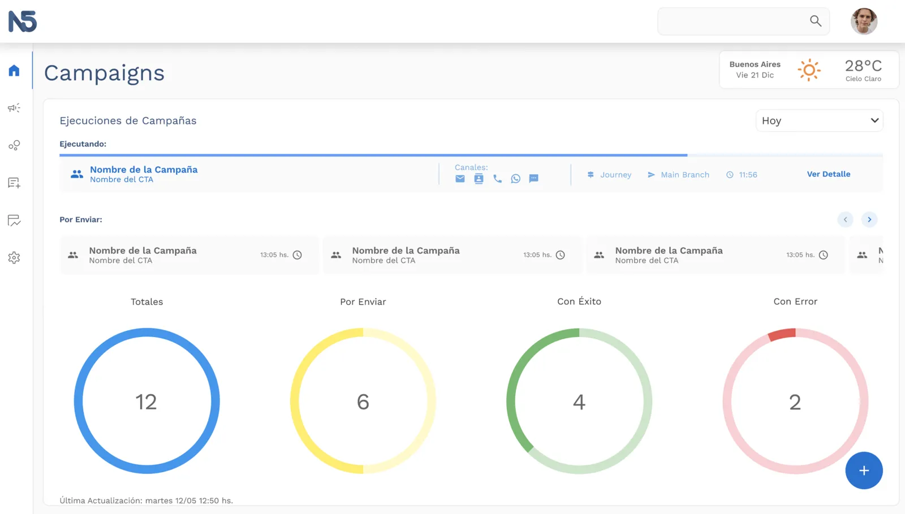
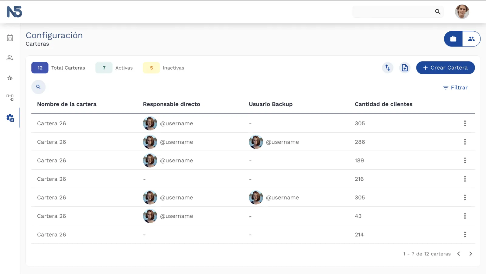
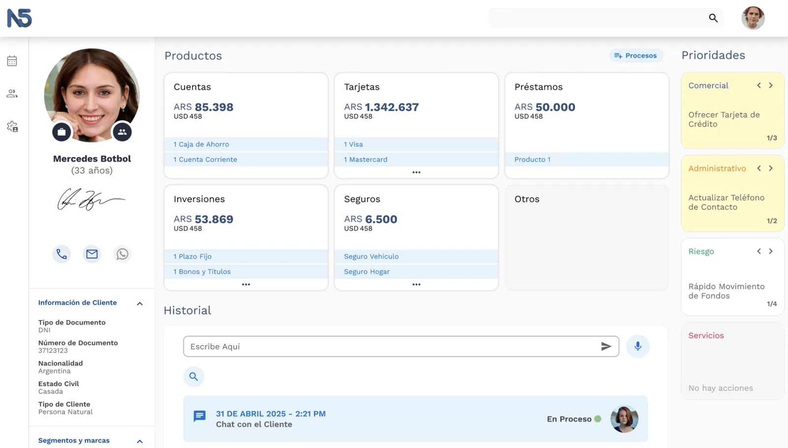
Los mismos tres módulos, después del sistema. Campañas, Carteras y FMC — un único criterio visual.
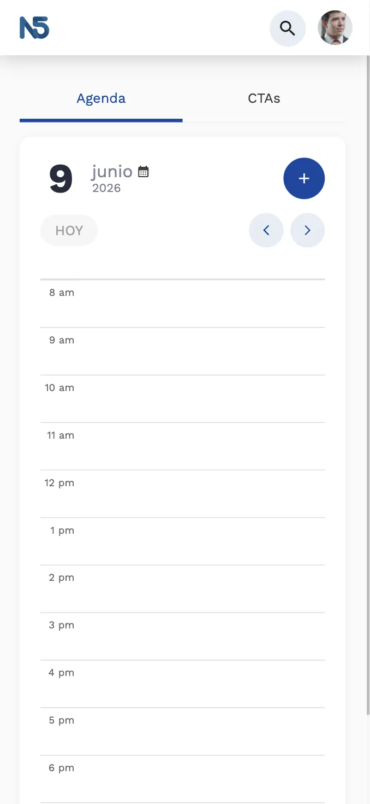
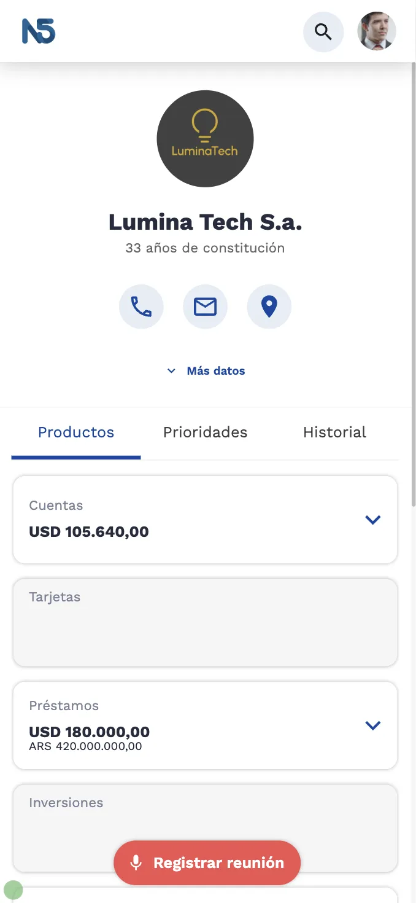
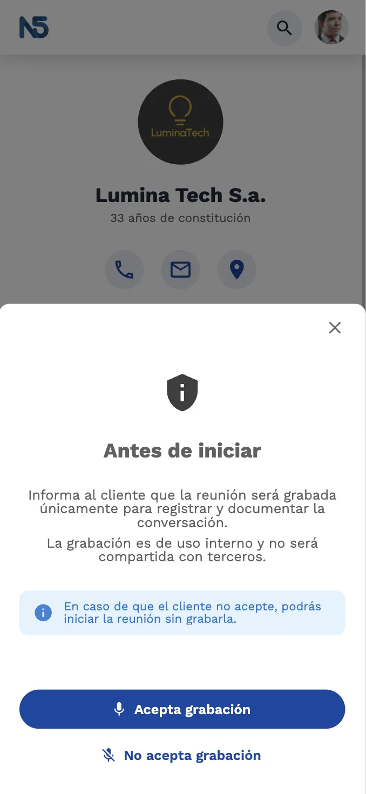
El sistema escala a mobile. Feature de registro de visitas a clientes — crítica para banca privada. FMC — Ficha Mi Cliente.
Lo más importante fue lo que cambió en cómo la organización vio al diseño. De ser algo que "hacía las pantallas", pasó a ser algo que construía estructuras. Al cierre de año, el equipo completo — CEO y jefes de área incluidos — reconoció públicamente ese cambio. Eso no es menor.
La prueba más concreta de que el sistema funciona: la misma pantalla con identidades distintas. Los tokens de color del cliente se aplican sobre el esqueleto de MOB sin tocar el código de producto.
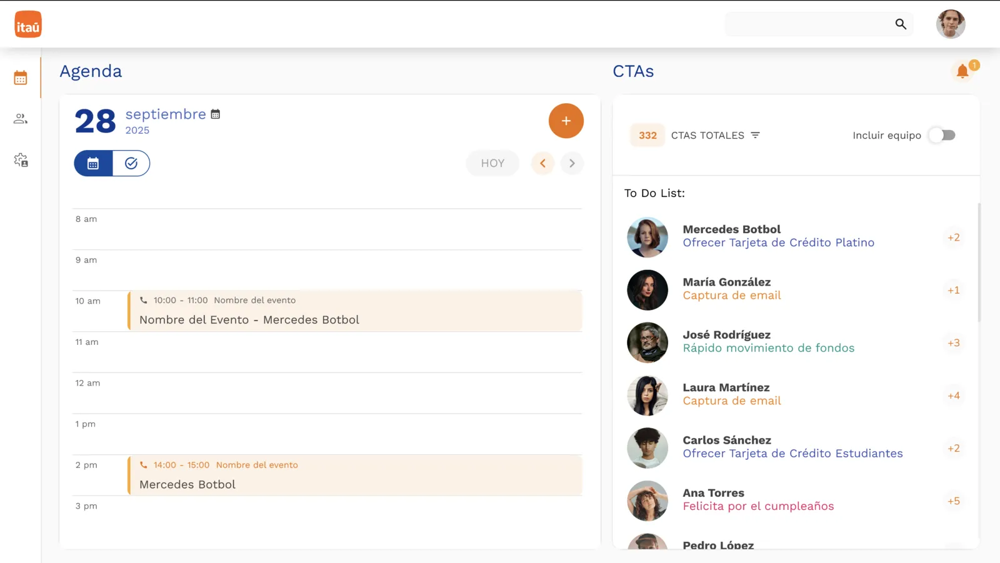
Identidad Itaú Chile.
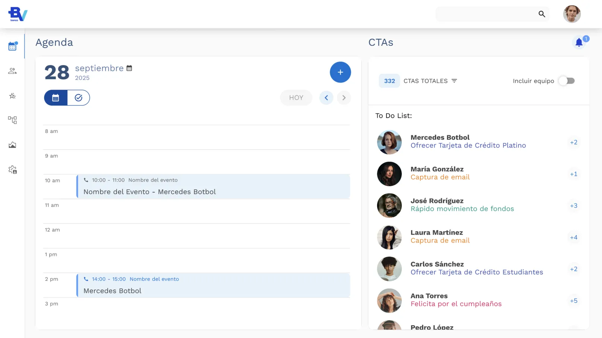
Identidad BV Brasil.
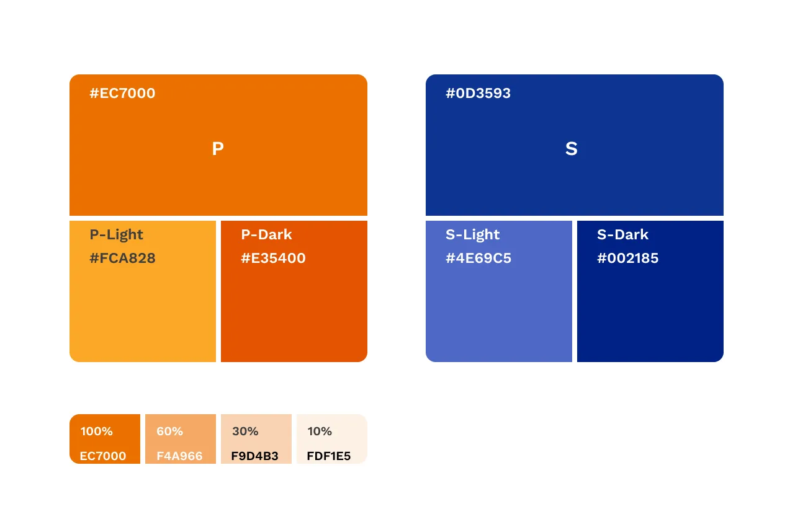
Tokens de color del cliente mapeados al sistema. La personalización opera a nivel de variable, no de componente.